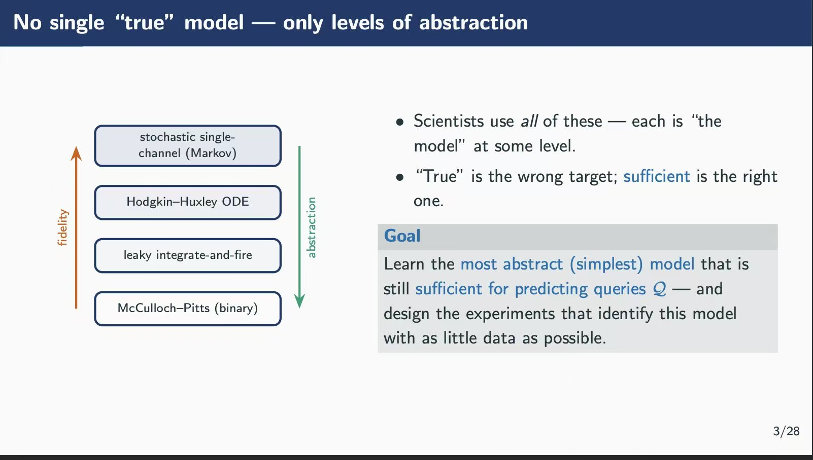

What does it mean to understand something?
This question appears in surprisingly different parts of AI and cognitive science.
Does NeuroAI actually help us understand the brain, or does it only give us better predictive models?
Does an LLM have a world model, or is it producing convincing behavior without understanding?
What does interpretability need to reveal before we can say we understand how a model works?
And if automatic model discovery finds a compact model that predicts behavior well, has it discovered a scientific explanation—or only another predictor?
These debates use different methods and vocabularies. But underneath them is the same question:
I do not think the answer is “the one true representation.”
Truth matters. A completely false understanding will eventually fail. But in most interesting cases, we do not have direct access to final truth. We have evidence, and we build representations that are revised as evidence changes.
So perhaps a more useful question is:
Understanding depends on the question
Consider a neuron.
We can model it as a simple unit that either fires or does not fire. We can use a more detailed model that tracks voltage over time. Or we can model ion channels and their dynamics.
Which one is the correct model?
That depends partly on the question.
If I only want to predict whether the neuron will fire, a simple model may be enough. If I want to understand the effect of a particular ion channel, the same model may be useless.
Kevin Murphy recently illustrated this idea nicely with different levels of neuronal models: choose the most abstract model that is still sufficient for the query of interest.

I think the same logic applies naturally to understanding.
More detail does not automatically mean more understanding.
A good understanding preserves enough of the right structure for the questions that matter.
Understanding is a cognitive compression problem
For a human, there is one more constraint.
A scientific model can be arbitrarily complicated in principle. A human mental model cannot.
We have limited attention, limited working memory, limited time, and very different prior knowledge.
So the problem is not only:
It is also:
This turns understanding into a cognitive compression problem.
A subway map is a useful example. It is a terrible reconstruction of a city: distances are distorted, streets disappear, buildings and terrain are omitted.
But if your goal is to get from one station to another, those omissions are exactly what make the map useful.
A satellite image contains far more information, yet may support that task worse.
Human understanding often works the same way.
We do not copy reality into our heads. We build mental models that leave most things out while preserving the structure needed for reasoning and action.
So one useful way to think about understanding is:
The depth of an understanding can then be partly described by the range of questions it supports.
A narrow understanding may work only in familiar cases. A deeper one may support prediction, transfer, intervention, modification, or explanation across new situations.
This also clarifies why human understanding can become a bottleneck.
In the previous post, I called the growing gap between the speed at which complex work can be produced and the speed at which people can build the understanding needed to act on it the understanding bottleneck.
That bottleneck exists precisely because human cognition is bounded.
If we had unlimited attention, memory, and time, we could simply absorb everything.
We do not.
Every act of understanding therefore requires compression: deciding what structure must be preserved and what can safely be left out.
Truth constrains understanding; usefulness makes it observable
This is where I find the idea of usefulness helpful.
By usefulness, I do not mean economic value or the idea that knowledge matters only when it produces an immediate practical gain.
An understanding can be useful because it helps someone predict a new case, recognize a boundary, notice a contradiction, ask a better question, modify something safely, or explain an idea to another person.
These are all things an understanding enables.
Truth still matters. If a mental model is completely disconnected from reality, its usefulness will eventually collapse.
But we rarely have a direct measurement of how close a mental model is to some final truth.
What we can observe is how it behaves under evidence.
- Does it generalize?
- Does it survive changes in context?
- Does it reveal where it should fail?
- Does it support transfer?
- Does new evidence force us to revise it?
In this sense:
Usefulness does not replace truth. It gives us a way to measure and update understanding when the final truth itself is not directly available.
What about AI understanding?
This framing changes how I think about the familiar question:
Perhaps that question is too coarse.
A more informative one is:
If a representation reliably supports prediction, generalization, planning, or successful action, then it has captured some structure of the problem.
That representation may look nothing like a human one.
It may use dimensions we do not have names for or combine features in ways that feel unnatural to us.
But unfamiliarity alone does not show that there is no understanding.
The important questions are what the representation allows the system to do, how broadly it generalizes, and where it fails.
If we define “real understanding” as a representation that looks like ours, then the debate becomes partly circular.
We are no longer asking whether the system has learned useful structure.
We are asking whether it has learned that structure in a human-recognizable form.
Those are different questions.
From AI understanding to human-centered understanding
Even if an AI has an understanding sufficient for its own task, a human problem remains.
The representation that allows an AI to produce an answer is not necessarily the representation a human needs to work with that answer.
An AI may have enough understanding to generate code, while the engineer reviewing it needs a mental model of the architecture and failure points.
An AI may discover a proof, while a mathematician needs the central idea well enough to connect it to another result.
A neural network may predict behavior extremely well, while a scientist needs to understand what structure it has captured before deciding what experiment to run next.
The AI and the human are answering different queries.
And because humans have limited cognitive resources, we cannot solve this simply by giving the human everything the AI knows.
This is why I think human-centered understanding is not just a preference or a slogan.
It is a practical problem created by bounded cognition.
For a human, the right mental model depends on the object, but also on the person’s prior knowledge, cognitive resources, and goal.
A reviewer, a builder, a learner, and a decision-maker may need very different understandings of exactly the same system.
So the problem becomes:
If cognition were unlimited, this problem would be much less interesting. We could simply transfer everything.
But cognition is limited.
Too little structure, and the person cannot act reliably.
Too much irrelevant structure, and the representation consumes cognitive resources without improving what the person can actually do.
The goal is therefore not to maximize information transfer.
It is to preserve the right information.
From a philosophical question to a cognitive problem
This perspective does not resolve every philosophical debate about understanding.
But it changes the form of the problem.
Instead of asking whether a model, theory, AI, or person possesses some hidden certificate called “real understanding,” we can ask:
- What mental model has been constructed?
- What queries can it support?
- What evidence grounds it?
- How much cognitive resource does it require?
- Where does it fail?
And for human understanding, we can ask an even more concrete question:
This is where the abstract debate over understanding becomes a cognitive problem.
The understanding bottleneck is the constraint: complex knowledge and artifacts can increasingly exceed the rate at which humans can build useful mental models of them.
Human-centered understanding is the corresponding problem: how to construct the right mental model for a particular human, goal, and cognitive budget.
Understanding is not about putting more of the world into a mind.
It is about preserving the right structure for what that mind needs to do.